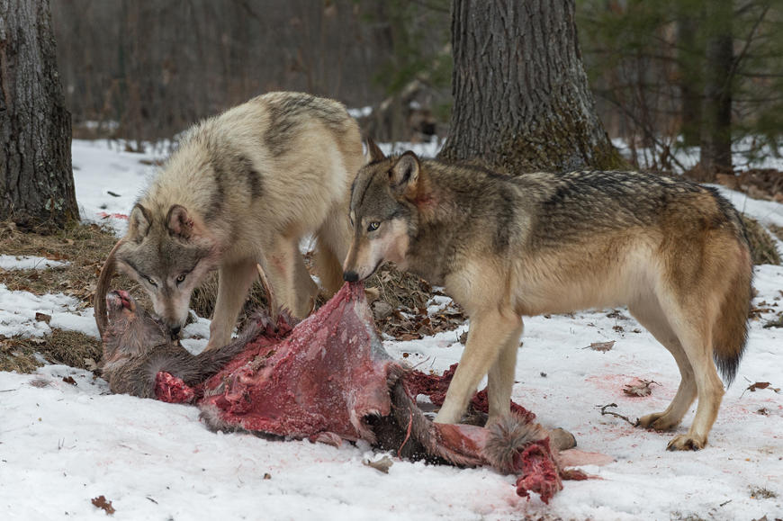

O lobo, nome utilizado para designar a espécie Canis lupus, é um animal que vive em algumas regiões do Hemisfério Norte, sendo encontrado nos Estados Unidos, Europa, Ásia e Canadá. A sua distribuição já foi muito maior do que a atual. Com o declínio de suas populações, esses animais são encontrados em áreas mais restritas e selvagens, onde praticamente não há ação antrópica. Dentre suas principais características, podemos destacar:

O lobo é um animal carnívoro e apresenta uma alimentação bastante variada, sendo comum se alimentarem de presas grandes, como veados, alces e javalis. No entanto, a sua alimentação também pode ser constituída por presas pequenas, como roedores, e animais domésticos, como ovelhas e gado, além de animais mortos e sobras de alimentos encontrados nos lixos.
O lobo já habitou as mais diversas áreas do Hemisfério Norte, no entanto, ainda na Idade Média, foi vítima de intensa caça, o que levou à sua extinção no Japão e em diversas regiões da Europa, Estados Unidos, Índia e México. Devido ao grande declínio das populações da espécie, políticas de proteção foram elaboradas, o que acabou por cessar esse declínio.
Outro fator que contribuiu para a proteção da espécie foi a saída da população do campo para os grandes centros urbanos, o que acabou gerando uma mudança no ambiente e, com isso, os lobos voltaram a ocupar diversas áreas onde eles já não mais existiam.
Atualmente o lobo está classificado, segundo a Lista Vermelha de Espécies Ameaçadas da União Internacional para a Conservação da Natureza e dos Recursos Naturais (IUCN), como pouco preocupante.
Univali RWD 2021
07/05/2021
Prof Alex Rese